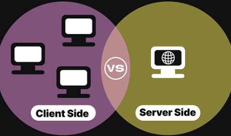

Layout
A - De första två, columns samt rows, kan användas för att bestämma storleken kring kolumnerna och raderna för en grid-layout. Man anger alltså storleken för varje kolumn och rad med fasta mått eller enheter som är flexibla. Den sista griden, area, syftar till att skapa en specifik mall för layouten och gör detta genom att tilldela namnen för de olika delarna av gridet. Dessa namn representerar en specifik cell eller en grupp av sådana celler där man sedan kan placera innehåll.
B - Inom CSS så är media queries en teknik som kan användas för att tillämpa olika stilar baserat på enhetens egenskap, det vill säga, storleken på skärmen, upplösningen samt orientering. Syftet är att webbsidan ska se bra ut och funka oavsett vilken typ av enhet som användaren nyttjar.
